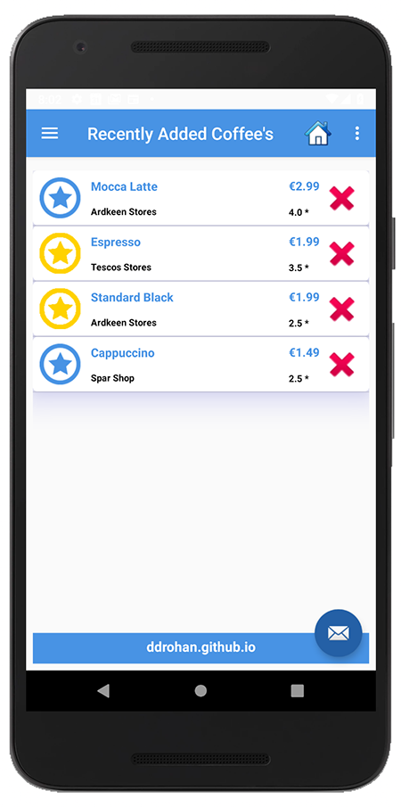
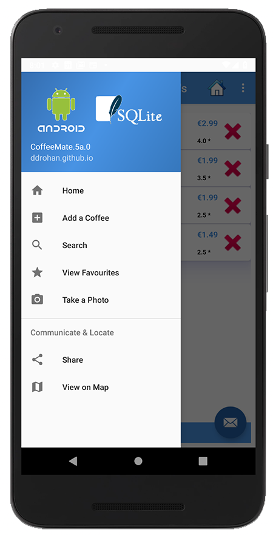

This lab continues our Case Study CoffeeMate and implements persistence (through an SQLite Database) in an Android App.
You can continue on with your own version of CoffeeMate for this lab, but if you wish, you can download the starter code here - CoffeeMate.5a.0.Starter.
In this lab, you are required to do the following:
The following steps will guide you through these requirements, but first you'll need to download some helper classes here to make this lab a bit easier.
Once you've downloaded the archive, add them to a new ie.cm.db package in your project.
You'll get a small error in your Coffee Model, so fix that (just change the type and comment out the relevant line in the constructor).
Take a few moments to investigate the classes and familiarise yourself with the methods you'll be using. There are a number of classes you'll need to modify to add database support to your project.
Once you've imported the necessary Database classes and placed them in the correct package, (and fixed any errors) this step is relatively straight forward - all you have to do is replace the method calls that manages the coffeeList with the respective dbManager calls.
The first thing you need to do is create an instance of DBManager in CofeeMateApp.java and both open/close the database when necessary.
Our DBManager instance inside our Application Object should now look like this :
public class CoffeeMateApp extends Application {
//public List <Coffee> coffeeList = new ArrayList<Coffee>();
public DBManager dbManager = new DBManager(this);
@Override
public void onCreate()
{
super.onCreate();
Log.v("coffeemate", "CoffeeMate App Started");
dbManager.open();
}
@Override
public void onTerminate()
{
super.onTerminate();
dbManager.close();
}
}Once you make this change (and save the file) you'll get a number of errors, which actually indicates which classes you need to now update and add the database calls (and remove the coffeeList calls). Each error requires only one line of code to be fixed, so have a go and updating each of the classes (and we'll have a look at the solution at the end of the Practical Lab).
Once you fix all the errors, and run the app again, you should see your coffee list - but this time those coffees are stored in a database.
And as a final check, if you call the setupList() method of the DBManager reference in your CoffeeMateApp reference 'app' (replacing the existing setup method in 'Home') you should see the following list:

and if you choose the menu (assuming you've downloaded the starter code)

After some testing you may find that your adapter isn't functioning as expected in certain circumstances when deleting multiple coffees. This is due to the fact that our data is now persistent, so depending on 'where you are', so to speak, some slight refactoring of our deleteCoffees() is required, like so
public void deleteCoffees(ActionMode actionMode)
{
Coffee c = null;
for (int i = listAdapter.getCount() - 1; i >= 0; i--) {
if (listView.isItemChecked(i)) {
activity.app.dbManager.delete(listAdapter.getItem(i).coffeeId); //delete from DB
listAdapter.coffeeList.remove(listAdapter.getItem(i)); // update adapters data
}
}
actionMode.finish();
if (favourites) {
//Update the filters data
coffeeFilter = new CoffeeFilter(activity.app.dbManager.getAll(),"favourites",listAdapter);
coffeeFilter.filter(null);
}
listAdapter.notifyDataSetChanged();
}And make sure you test you 'Edit' also, as there's some refactoring required here also
HINT : You'll need to use your Application Object reference to hook into your database, before you can Update
Even after you've refactored your EditFragment you may notice that on returning to the 'Home Screen' the coffee hasn't been updated (even though it has been in the database).
There's a few options here to fix this, you could go with creating a new Fragment Transaction and replacing the 'Home Screen' CoffeeFragment with a new version of itself, like so
getActivity().setTitle(R.string.recentlyViewedLbl);
Fragment fragment = CoffeeFragment.newInstance();
((CoffeeFragment)fragment).favourites = false;
getActivity().getSupportFragmentManager()
.beginTransaction().replace(R.id.homeFrame, fragment)
.addToBackStack(null)
.commit();This is a fix for this particular bug, but doesn't handle the 'Back Button' through multiple screens (another bug!! test it and see) so I went with simply moving
listAdapter = new CoffeeListAdapter(activity, this, activity.app.dbManager.getAll());
coffeeFilter = new CoffeeFilter(activity.app.dbManager.getAll(),"all",listAdapter);from the onCreate() method to the onCreateView() method and make sure you call
super.onCreateView(inflater,container,savedInstanceState);in the subclass SearchFragment method, to avoid a NullPointerException on setting the filter.
Test again to confirm and go have a coffee!
Well Done!
This is a solution to the lab: